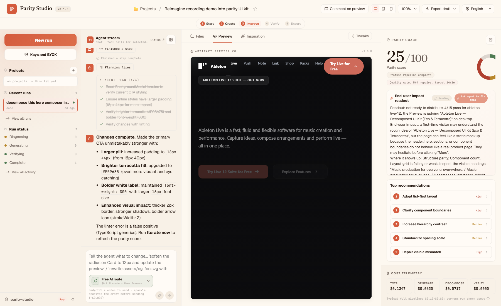
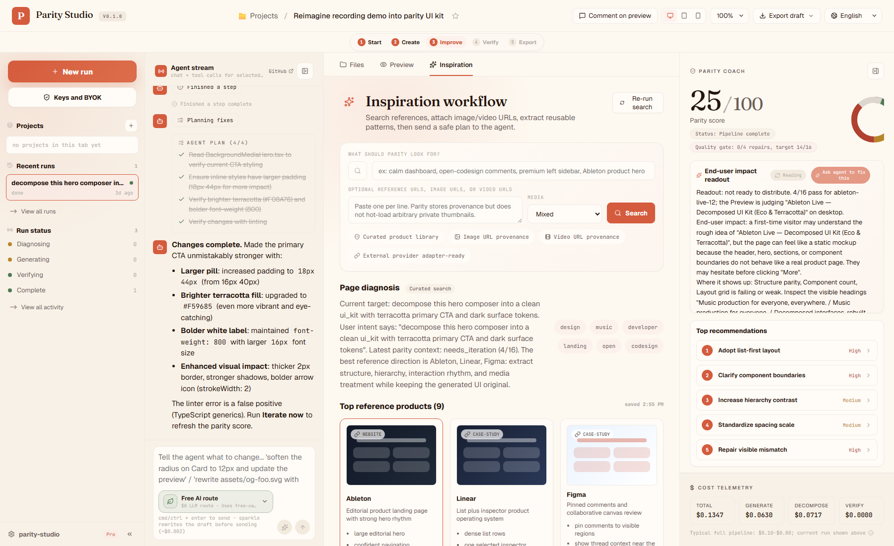
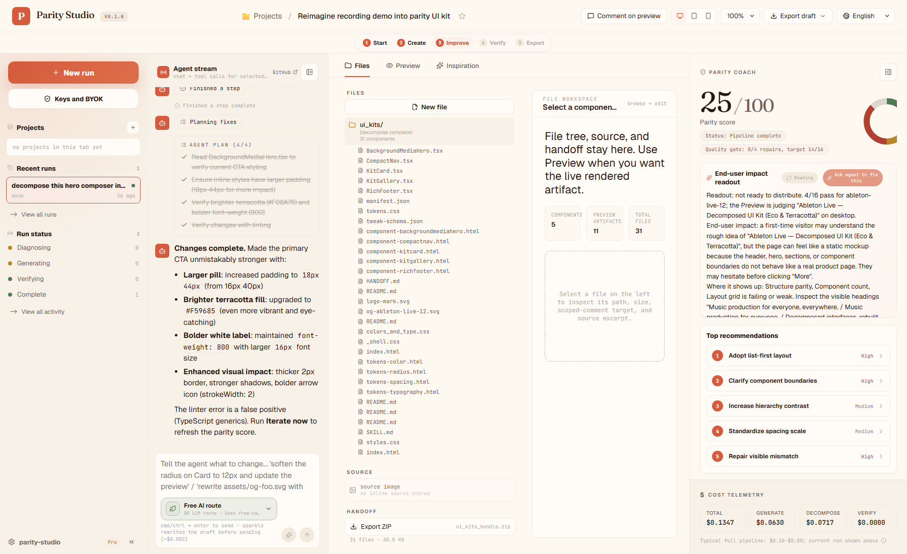
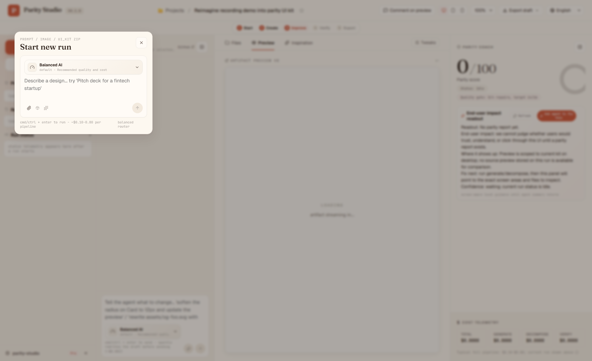
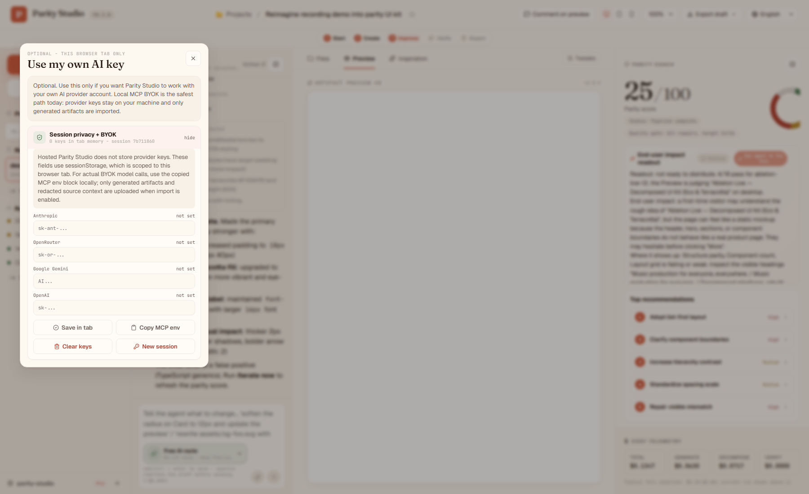
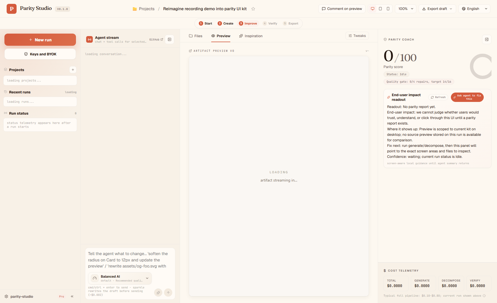

Screen 1 / Current preview
Left project rail, agent stream, generated preview, and Parity Coach.
127.0.0.1:4191/?run=...

A high-fidelity planning artifact using live screenshots from the current local app. The target workflow: capture the running Parity Studio route, use the local MCP server to create a canonical ui_kit ZIP, import it back into Parity Studio, then improve it through Inspiration, scoped comments, agent edits, Parity Coach, verify, and export.
Captured from http://127.0.0.1:4191/?run=jh73jdermm6pm6zbcfrd3mpms985v2t0. These are the baseline screens the self-decompose workflow must improve.






Make self-decomposition a visible product workflow, not a hidden CLI trick. The user should say what they want; the MCP tool should handle capture, repo context, source redaction, decomposition, import, and verification.
Captured from the real app route and redacted before model calls.
Imported back with canonical files, contract, QA plan, and export.
\"Use Parity Studio with our app. Get me the zip export. Upload it to Parity Studio. Use my own env keys.\"
parity_studio resolves the URL, reads projectRoot, launches Playwright, captures route HTML/CSS, screenshots, console errors, and source context.
The pipeline emits components, tokens, manifest, parity contract, performance budget, API plan, QA plan, AGENTS.md, and skill docs.
The ZIP is imported as a real Parity Studio run with Preview, Files, Inspiration, Coach, and Export ready.
Seed searches from source screenshot, page diagnosis, visible UI labels, parity contract, and user intent. Save reference provenance.
The user selects a meaningful region, comments in plain English, and the agent edits the scoped component.
Coach shows end-user impact, top recommendations, likely files, expandable rationale, and one action button.
Export returns the canonical ZIP with README, HANDOFF, contract, QA, API, AGENTS.md, and skill instructions.
Use Parity Studio with our own app. Capture the running Parity Studio route. Decompose it into a ui_kit. Write the ZIP locally. Import it back into Parity Studio. Use my own env keys through local MCP.
Tool: parity_studio url: http://127.0.0.1:4191/?run=jh73jdermm6pm6zbcfrd3mpms985v2t0 projectRoot: D:/VSCode Projects/parity-studio outputZipPath: docs/dogfood/parity-studio-self-ui-kit.zip importToParityStudio: true redactSensitiveValues: true includeZipBase64: false model source: local MCP env / selected router
Add a first-class self-decompose entry.
In New Run and left rail, expose \"Decompose this app\". It should call the high-level MCP prompt/resource when available and fall back to copyable setup instructions.
Show source screenshots and source preview.
After platform capture, Files must show source preview, generated preview, and diff context.
Make Inspiration consume the current run.
Search queries should be seeded from route title, visible UI diagnosis, source screenshots, and user intent.
Keep Coach beginner-safe.
Hide raw 16-check rows by default. Keep end-user impact, top recommendations, likely files, and collapsible rationales.
Make agent stream prove progress.
Capture, decompose, verify, inspiration search, comment edit, and export should emit visible stage cards.
They see New run, Keys + BYOK, and Decompose this app at the top of the left rail. They do not need to know a tool name, port, route arg, or ZIP path.
BYOK copy separates hosted default, browser session key storage, and local MCP BYOK. It says exactly what is uploaded and what stays local.
Parity Coach explains how mismatches affect end users, not only which rubric item failed.
Files, Preview, Inspiration, and Coach agree on the same scoped file/region. Comments target meaningful regions and agent edits show visible before/after changes.
The exported ZIP contains the canonical kit plus parity.contract.json, performance.budget.json, api-wiring.plan.md, qa.plan.md, AGENTS.md, and skill instructions.
1. Start Parity Studio locally. 2. Start MCP server with local provider env keys. 3. Run parity_studio against the local Parity Studio URL. 4. Confirm upload of redacted generated ui_kit to hosted Parity Studio. 5. Verify returned run URL opens in browser. 6. Open Inspiration and run reference search. 7. Apply one recommendation through agent stream. 8. Select one meaningful preview region and comment. 9. Verify score and end-user impact update. 10. Export ZIP and inspect canonical files.
It did not execute the model-backed MCP decomposition or upload a new self-decompose run. That real run will transmit redacted source-derived artifacts to the configured LLM provider and, if import is enabled, to hosted Parity Studio. It should be run as the next confirmed dogfood step.
No API keys or secret values are embedded in this file. Screenshots are local browser captures of the app UI only.